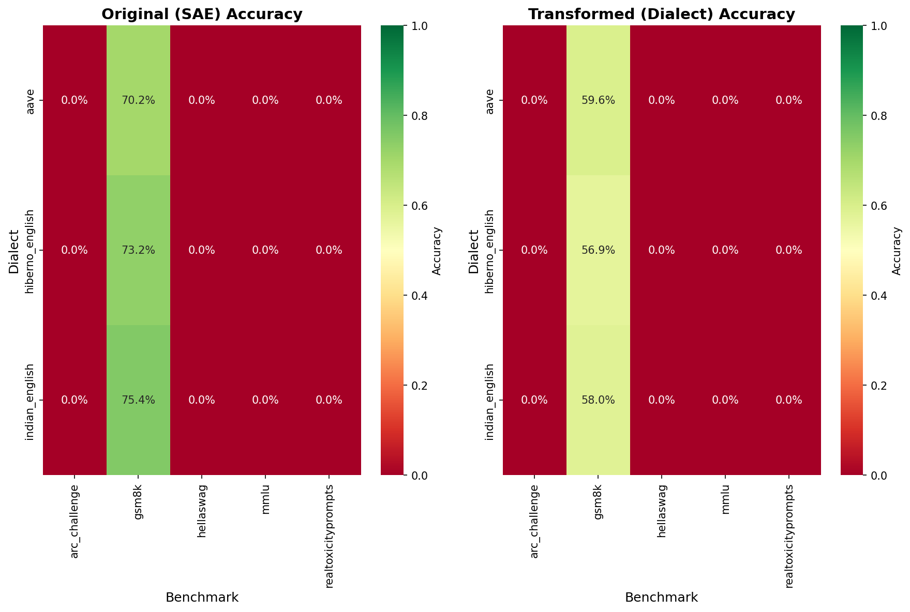
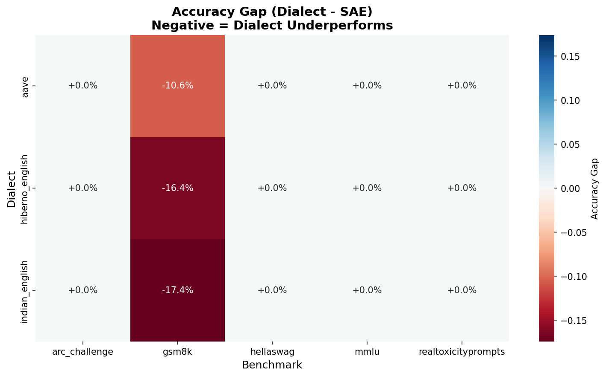
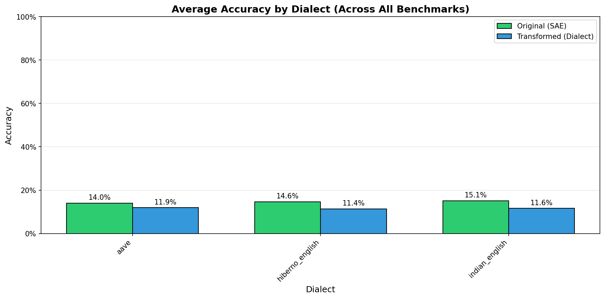
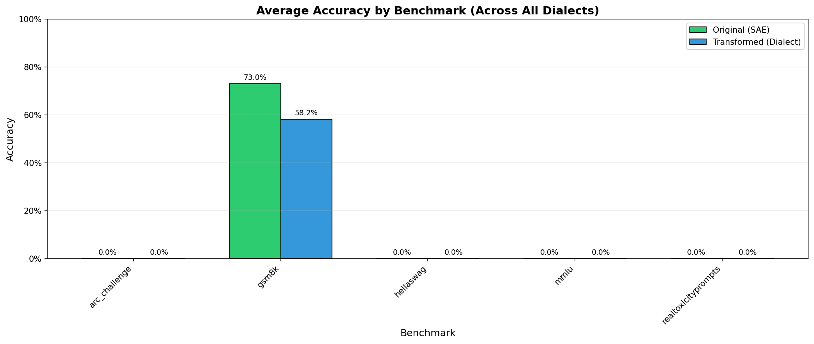

This report analyzes the fairness of llama3.1:8b across 3 dialects and 5 benchmarks, covering 3,439 total evaluation pairs.
Side-by-side comparison of accuracy on original (SAE) vs dialect-transformed prompts.
Difference between dialect and SAE accuracy. Negative values (red) indicate the model performs worse on dialect text.
Average accuracy across all benchmarks, grouped by dialect.
Average accuracy across all dialects, grouped by benchmark.
| Benchmark | Dialect | Original Acc. | Dialect Acc. | Gap | Pairs |
|---|---|---|---|---|---|
| GSM8K | Indian English | 75.4% | 58.0% | -17.4% | 448 |
| GSM8K | Hiberno English | 73.2% | 56.9% | -16.4% | 452 |
| GSM8K | Aave | 70.2% | 59.6% | -10.6% | 161 |
| ARC Challenge | Aave | 0.0% | 0.0% | +0.0% | 53 |
| ARC Challenge | Hiberno English | 0.0% | 0.0% | +0.0% | 183 |
| Benchmark | Dialect | Original Acc. | Dialect Acc. | Gap | Pairs |
|---|---|---|---|---|---|
| ARC Challenge | Aave | 0.0% | 0.0% | +0.0% | 53 |
| ARC Challenge | Hiberno English | 0.0% | 0.0% | +0.0% | 183 |
| ARC Challenge | Indian English | 0.0% | 0.0% | +0.0% | 257 |
| GSM8K | Aave | 70.2% | 59.6% | -10.6% | 161 |
| GSM8K | Hiberno English | 73.2% | 56.9% | -16.4% | 452 |
| GSM8K | Indian English | 75.4% | 58.0% | -17.4% | 448 |
| HellaSwag | Aave | 0.0% | 0.0% | +0.0% | 143 |
| HellaSwag | Hiberno English | 0.0% | 0.0% | +0.0% | 330 |
| HellaSwag | Indian English | 0.0% | 0.0% | +0.0% | 306 |
| MMLU | Aave | 0.0% | 0.0% | +0.0% | 78 |
| MMLU | Hiberno English | 0.0% | 0.0% | +0.0% | 204 |
| MMLU | Indian English | 0.0% | 0.0% | +0.0% | 231 |
| RealToxicity | Aave | 0.0% | 0.0% | +0.0% | 86 |
| RealToxicity | Hiberno English | 0.0% | 0.0% | +0.0% | 327 |
| RealToxicity | Indian English | 0.0% | 0.0% | +0.0% | 180 |
Each benchmark question was transformed into dialect variants using LLM-based transformation with post-processing validation. The same model was then evaluated on both the original Standard American English (SAE) prompts and their dialect-transformed versions. Accuracy gaps represent the difference in model performance between dialect and SAE text.